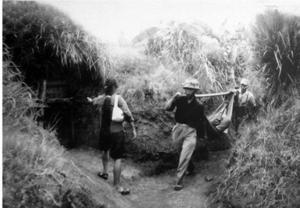

Bác Sĩ Đau Đớn

rên cơ thể Võ Hoàng Lê hằn những vết thương của một người lính chiến. Ông đã bị thương tới sáu lần trong 43 năm binh nghiệp – trong đó có hai lần thời chống Pháp và bốn lần thời chống Mỹ.
Những vết thương sau này cho thấy rõ sự đa dạng về vũ khí trong kho đạn dược của người Mỹ. Đối với Lê, năm 1967 không phải là một năm may mắn: trong một trận không kích, ông bị bom napalm làm cháy phỏng khuỷu tay phải; sau đó, trong một trận tấn công mặt đất, ông bị mảnh đạn phóng lựu M-79 văng trúng phần trên cánh tay trái; rồi trong một trận pháo kích, ông bị găm vài mảnh vào lưng do quả đạn nổ quá gần. Nhưng vết thương khủng khiếp nhất đến với Lê vào năm sau đó. Một quả đạn từ khẩu súng máy M-60 đã xuyên trúng tay ông, cắt đứt một phần bàn tay và ngón út. Khi Lê tới nơi chữa trị, người y tá ngần ngại trong việc cắt phần dưới bàn tay đang đu đưa của ông. Thế là Lê lôi con dao từ trong túi ra, không cần thuốc gây tê, cắt đứt phần tay vốn đã trở thành vô dụng.
Các bạn có thể nghĩ rằng Lê là một lính bộ binh nơi tiền tuyến. Trên thực tế, nhiệm vụ cơ bản của ông không phải là cướp đi sự sống của người khác, mà là trong vai trò một bác sĩ phẫu thuật, tìm cách giữ gìn sự sống. Đóng quân ở địa đạo Củ Chi, một hệ thống địa đạo quy mô lớn nằm sát nách Sài Gòn, Lê hằng ngày phải tham gia vào cuộc chiến sinh tồn của bản thân và của bệnh nhân. Những vết thương trên cơ thể ông là chứng tích cho cuộc chiến kinh khiếp ở Củ Chi.
Do bị cụt tay và không thể thực hiện phẫu thuật, Lê đành làm giám sát – một nhiệm vụ mà ông đảm trách cho tới ngày tàn chiến cuộc.
Cuộc đời binh nghiệp của Lê không phải là không điển hình cho rất nhiều người phục vụ trong quân đội. Ông nhập ngũ năm 1947 và nhanh chóng được “thử thách bởi bom đạn”. Lúc mới mười bốn tuổi, Lê thấy mình có bổn phận phải tham gia cuộc kháng chiến chống Pháp. Ở đơn vị quân y, ban đầu ông được đào tạo để trở thành y tá, rồi sau đó là bác sĩ. Hoàn thiện kỹ năng chủ yếu nhờ các khóa học thực nghiệm, Lê dần trở thành một chuyên gia phẫu thuật sọ não. Khi cuộc chiến chống Pháp kết thúc, ông ra Bắc nâng cao kỹ năng. Năm 1960, giữa lúc cuộc đấu tranh với Sài Gòn leo thang, ông lại được điều vào Nam. Chiến trường miền Nam trở thành nhà của Lê trong suốt mười lăm năm sau đó.
Cuộc chiến chống Pháp và sau này là chống Mỹ đã gây ra bi kịch vô cùng to lớn đối với gia đình của Lê. Đến khi Sài Gòn sụp đổ vào năm 1975, bảy thành viên trong gia đình ông đã thiệt mạng.
Cha của Lê là một trưởng thôn. Khi quân Pháp chiếm làng, họ đã bắt giam ông và ông đã chết trong tù vào năm 1947. Thi thể ông không bao giờ được trao trả về cho gia đình và cho đến tận hôm nay, Lê vẫn không thể tìm thấy hài cốt của cha.
Mẹ của Lê có một số phận không khá hơn. Bà bị chính quyền ông Diệm bắt giam và tra tấn. Sau khi được thả một thời gian thì bà mất vào năm 1961. trong bốn anh chị em – gồm ba người anh em và một người chị - không ai sống sót qua chiến tranh. Tất cả đều gia nhập quân đội và chết trong cuộc chiến với Mỹ. Hài cốt của một người em trai giờ vẫn chưa được tìm thấy.
Sau khi đã trả giá cho chiến thắng bằng chính sinh mạng của cha mẹ và anh chị em ruột, ông Lê rốt cuộc lại bị tước đi phần ruột thịt cuối cùng của mình vào năm 1969. Vợ ông, bà Nguyễn Thị Thản, lớn hơn ông hai tuổi, cũng là một bác sĩ. Chung đơn vị với Lê, hai người gặp nhau ở miền Nam, cùng làm việc tại Bình Dương. Thông thường, trước mỗi đợt ném bom B-52 đều có lệnh báo động. Tuy nhiên, trong ngày định mệnh vào năm 1969 ấy, trận dội bom ập đến bất ngờ. “Vụ ném bom đến quá nhanh, chúng tôi vội lao vào nơi trú ẩn. Mỗi người được bố trí một hầm trú ẩn có đánh số. Tôi và vợ ở khác hầm. Ngay khi tôi vừa chui vào hầm thì một quả bom nổ rất gần. Vụ nổ gần đến mức một phần hầm chỗ tôi bị sập. Cơn chấn động bao trùm khiến tôi không nghe thấy gì hết. Khi trận bom vừa dứt, chúng tôi bò ra. Mọi người chạy tới những hầm bị sập để cứu người. Rất nhiều bom đã được ném xuống. Không may là có một căn hầm bị bom rơi gần trúng. Tôi biết vợ mình trong đó. Nhiều người chạy tới để tìm người sống sót. Phải mất một tiếng đồng hồ mới đào được những người bị vùi. Tôi cố gắng đào nhưng bị mọi người lôi ra. Cuối cùng thì kéo lên được ba người, trong đó có vợ tôi. Khám nghiệm các nạn nhân, chúng tôi có thể thấy được tác động của vụ nổ bom và sức ép của nó - máu trào ra từ miệng và mũi họ. Họ được cấp cứu và hồi sức tim phổi nhưng cả ba đều chết. Vợ tôi mơi ba mươi tám tuổi”.
Suốt mười lăm năm hoạt động ở miền Nam, Lê chủ yếu làm việc tại Củ Chi. Chiến dịch phun thuốc rụng lá được tiến hành ráo riết ở đây đã buộc bệnh viện của ông phải chuyển vào lòng đất.
“Chúng tôi chiến đấu trên mặt đất và khi kẻ thù tiến tới thì chui xuống hầm”, ông Lê giải thích. “Trong giai đoạn 1960-1968, chúng tôi gặp nhiều khó khăn do quân địch hoạt động mạnh. Một bệnh viện đã được lập hoàn toàn
dưới lòng đất – gồm phòng mổ, phòng xét nghiệm, phòng thuốc và hồi sức, v.v. Chúng tôi khoét các phòng cách mặt đất khoảng ba đến bốn mét rồi lắp xà đỡ và tấm trần, thường được làm từ các tấm kim loại mà người Mỹ dùng làm thềm để máy bay ở sân bay. Sau đó dùng đất lấp lại và ngụy trang bằng cây bụi.
Các phần của bệnh viện được nối với nhau bằng đường hầm. Bên trong đường hầm, chúng tôi còn đào giếng nước. Hộp đạn rỗng thì được dùng làm nhà vệ sinh. Ban đêm, chúng tôi mang hộp lên mặt đất để làm sạch. Mỗi phòng rộng không quá 2,5×3 mét. Làm hầm lớn hơn thì rất nguy hiểm vì dễ sập và dễ bị phát hiện.
Phòng mổ đủ rộng để chứa một bác sĩ, một trợ lý, thiết bị phẫu thuật, bác sĩ gây mê và y tá. Đôi khi, đối với những cuộc đại phẫu như mổ dạ dày, chúng tôi cần hai trợ lý nên có cả thảy sáu người trong phòng. Máy phát cung cấp điện chiếu sáng để mổ nhưng trong trường hợp tiếng máy nổ có thể làm lộ bí mật, chúng tôi dùng đèn pin gắn trên mũ để phẫu thuật.
Chúng tôi thường không có thuốc gây mê. Khi đó, chúng tôi dùng thuốc Novocain 1 đối với tiểu phẫu; với các ca phẫu thuật lớn, chúng tôi tiêm Novocain vào xương sống hoặc tĩnh mạch của tủy sống. Bệnh nhân vẫn thức nhưng không có cảm giác gì hết. Tuy nhiên, ngay cả Novocain cũng thiếu và chúng tôi buộc phải pha loãng. Khi điều này xẩy ra, tôi thông báo trước với bệnh nhân rằng hiện chỉ có đủ Novocain để gây tê đối với các cơ quan nội tạng, không đủ gây tê trên da nơi chúng tôi thực hiện vết rạch đầu tiên. Mổ dạ dày được tiến hành như thế.
Trong nhiều ca, chúng tôi thiếu cả thuốc gây mê lẫn Novocain, nhưng do tình trạng khẩn cấp của bệnh nhân mà không thể trì hoãn việc phẫu thuật được. Một người lính có thể đang bị thương nặng và vết thương đang hoại tử trầm trọng, dần thối rữa ra và cần phải cưa một chi ngay lập tức mà không có bất cứ loại thuốc gây tê nào. Sau khi thông báo với bệnh nhân về việc không đủ điều kiện gây tê và mê, chúng tôi giải thích thêm rằng nếu không phẫu thuật ngay thì nhiễm trùng sẽ lan rộng và có thể chết. Đó là một việc làm cực kỳ khó – cho cả bác sĩ lẫn bệnh nhân. Nhưng không có lựa chọn nào khác – chúng tôi buộc phải thực hiện thôi.
Nếu phải cưa một tay, chúng tôi buộc con uay cầm máu ngay trên chỗ sẽ cưa rồi dùng dao cắt thịt ở tay. Sau khi cắt đến tới xương, chúng tôi dùng cưa. Chúng tôi cố gắng hoàn tất việc cắt tay trong vòng mười lăm phút. Trong suốt ca phẫu thuật, bệnh nhân kêu gào liên tục và do quá đau đớn, nhiều lúc ngất đi. Đôi lúc bệnh nhân từ chối phẫu thuật không gây mê nhưng sau khi hiểu ra vấn đề, anh ta biết rằng không có lựa chọn nào khác. Đó là một cuộc vật lộn giữa sự sống và cái chết – và cuối cùng thì bệnh nhân thường chọn sự sống”.
Ông Lê chỉ ra sự đối lập trong chăm sóc y tế cho bệnh nhân của ông và chăm sóc của người Mỹ: “Bệnh nhân của tôi phải chịu đựng rất ghê gớm trong phẫu thuật. Nơi này, chúng tôi bị địch vây hãm, phải chui xuống địa đạo, cách không xa Sài Gòn vốn luôn có sẵn các phương tiện y tế để làm giảm đớn đau và khổ sở đối với người bị thương ở bên phía kẻ thù. Thật là khủng khiếp khi phải chứng kiến bộ đội của mình phải chịu đớn đau kinh khiếp trong khi biết rằng cách đấy không xa, phương tiện y tế luôn có sẵn – nhưng không bao giờ tiếp cận được. Trong khi người lính của chúng tôi chịu đau đớn thì người bị thương bên phía kẻ thù lại được chữa trị tốt hơn”.
Có lẽ sự tồi tệ kinh khiếp của điều kiện y tế mà người chiến binh phải chịu đựng trong một vài cảnh ngộ được Lê minh họa rõ nhất khi ông kể về phẫu thuật não: “Đôi khi chúng tôi phẫu thuật sọ não mà không có thuốc gây mê hoặc Novocain. Loại phẫu thuật này rất quan trọng trong việc cứu sống một bệnh nhân; chẳng hạn khi phải lấy đầu đạn ra khỏi hộp sọ người lính. Nếu còn ít Novocain, chúng tôi sẽ tiêm vào da đầu sau khi đã cạo tóc. Sau khi rạch da đầu, thách thức lớn là phải cắt xuyên qua hộp sọ để phẫu thuật trên não.
Để làm điều này, cần phải khoan nhiều lỗ vào hộp sọ. Thông thường, người ta có một loại khoan y tế đặc biệt để giảm nguy cơ đâm thủng vào não. Chúng tôi không có loại khoan đó nên phải dùng khoan tay thông thường, vì thế thường phải đối mặt với nguy cơ đâm thủng não trong suốt cuộc phẫu thuật.
Chúng tôi tẩm chất khử trùng lên mũi khoan trước kh bắt đầu. Hộp sọ có hai lớp – một lớp màu trắng và lớp kia màu hồng. Bác sĩ phải biết cần khoan sâu bao nhiêu là vừa. Chúng tôi phải dựa vào kinh nghiệm và kiến thức về độ dày các lớp hộp sọ để quyết định nên khoan sâu chừng nào. Nếu tôi viết một cuốn sách về chuyện này chắc độc giả sẽ không bao giờ tin – nhưng đó là sự thật. Sau khi khoan một dãy lỗ tạo thành hình tròn, chúng tôi sử dụng một công cụ đặc biệt – cái kềm – kẹp các mảnh xương sọ nằm giữa các lỗ khoan để hoặc tách các mảnh hộp sọ ra hoặc nới rộng các lỗ khoan. Đôi khi chúng tôi dùng kềm nha khoa.
Thay cho kềm, một kỹ thuật khác được sử dụng là lấy dây thô làm cưa, đưa dây thô vào một lỗ và đưa đầu kia ra lỗ kế cận, sau đó cầm hai đầu dây kéo đi kéo lại để cắt mảnh xương ở giữa. Thủ thuật này được lặp lại liên tục để tách xương hộp sọ ra, từ đó có thể thấy não ở bên trong.
Cuối cuộc phẫu thuật, rất khó kiếm được một mảnh hộp sọ đủ lớn để trám lại chỗ phẫu thuật do xương bị vỡ vụn và rơi vãi nhiều. Chúng tôi buộc phải để nguyên lỗ thủng như vậy và chỉ khâu phần da đầu bên ngoài lại. Làm như vậy, người ta có thể thấy phần da ở chỗ mảnh hộp sọ bị khuyết ‘phập phồng’ – như trái tim đang đập vậy. Những bệnh nhân này cần phẫu thuật thêm để đặt một mảnh kim loại trám vào chỗ não bị hở (vốn chỉ được bảo vệ tạm thời bởi một mảnh da đầu mỏng dính).
Chúng tôi phải thường xuyên có những sáng kiến như thế để cứu chữa thương binh. Điều này cũng giống cách trị bệnh của người Ai Cập hàng ngàn năm trước. Một trong những kỹ thuật họ áp dụng là bắt người cụt chi nhúng miệng vết thương vào chảo dầu sôi. Làm thế để mạch máu ở chỗ vết thương co lại, kết quả là giảm chảy máu. Còn chúng tôi, để giảm chảy máu, thường buộc chặt dây xung quanh chỗ chi bị cưa – không phải bằng chỉ y tế mà bằng các sợi dây dù của lính Mỹ.
Chúng tôi thường sáng tạo ra rất nhiều cách chữa bệnh. Nghệ và mật ong được bôi lên vết thương để khử trùng. Khi thực hiện mở khí quản, chúng tôi thiếu các ống y tế thông thường để đặt vào khí quản bệnh nhân, vì thế chúng tôi dùng ống tre non. Để cố định lại chỗ xương gẫy, chúng tôi tới nơi có xác máy bay rơi tìm đinh vít nhỏ về dùng. Các loại đinh vít này rất hữu dụng. Chúng tôi cũng dùng sọ dừa để làm chai truyền dịch. Ống thải của một chiếc trực thăng hoặc máy bay rơi cũng rất hữu ích, chúng tôi cắt chúng ra làm đôi để nẹp xương gãy”.
Bệnh viện của ông Lê chứng kiến số lượng thương vong nghiêm trọng nhất trong chiến dịch Tết Mậu Thân 1968.

“Bệnh viện chúng tôi chỉ là một cơ sở trung chuyển. Thương binh trước hết được chăm sóc tại đây nhưng sau đó sẽ được chuyển tới các bệnh viện cố định hơn để được điều trị đặc biệt. Đối với các ca mà chúng tôi chữa trị được, bệnh nhân sau khi khỏi sẽ trở lại chiến trường. Chúng tôi có thể xử lý một lúc sáu mươi tới bảy mươi bệnh nhân. Suốt đợt Tết đó, chúng tôi tiếp nhận tới một ngàn thương binh. Họ được chữa trị một thời gian rồi chuyển đến các bệnh viện tốt hơn. Chúng tôi thường đợi tới thời gian ngưng giữa các trận đánh để chuyển bệnh nhân đi”.Hầu như không có sự lựa chọn nào khác đối với bệnh nhân của ông Lê. Y tế thiếu thốn cộng với một lượng lớn thương binh luôn cận kề cái chết đã không cho phép Lê có được sự xa xỉ của việc hoãn điều trị tới một thời điểm thuận lợi hơn. Điều kiện y tế là một cơn ác mộng nhưng ông vẫn xác quyết rằng, “đó là cái giá mà chúng tôi trả cho chiến thắng”.